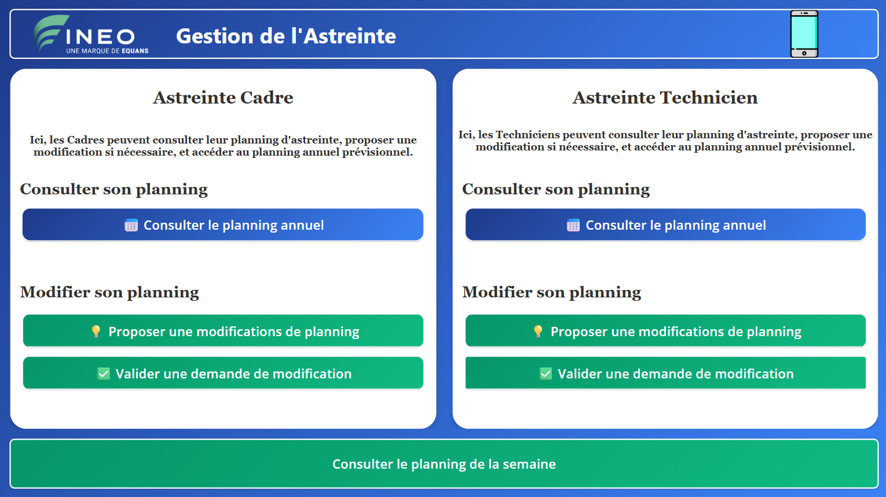

Gestion
de l'astreinte
L'interface en images
Captures réelles de l'application Power Apps — interface bureau et mobile.

Échange direct entre techniciens, sans hiérarchie
Le cœur de l'application repose sur un mécanisme pair-à-pair : un technicien fait une demande de remplacement à un collègue, ce dernier valide ou refuse depuis son application, et les bases de données se mettent à jour automatiquement selon la réponse. Aucune intervention du responsable n'est nécessaire.
Responsabiliser sans désorganiser
Les techniciens en charge de l'astreinte avaient besoin de flexibilité pour s'organiser entre eux — des imprévus, des contraintes personnelles ou des chevauchements avec des congés rendaient parfois nécessaire l'échange d'une semaine d'astreinte.
Avant cette application, chaque modification passait par le responsable d'équipe, qui devait valider, ajuster le planning Excel partagé et prévenir les personnes concernées. L'objectif : donner aux techniciens l'autonomie de gérer ces échanges eux-mêmes, tout en garantissant que les bases de données et le planning restent toujours à jour et cohérents.
Le flux de bout en bout
-
Étape 01Demande de remplacementLe technicien demandeur remplit un formulaire dans l'application : il sélectionne la période d'astreinte sur laquelle il souhaite être remplacé, choisit le collègue à solliciter parmi les techniciens disponibles et saisit un motif si nécessaire.
-
Étape 02Notification du collègue sollicitéUn flux Power Automate envoie immédiatement un e-mail au collègue désigné. La demande apparaît également dans son application sous forme de notification, avec les détails de la période concernée.
-
Étape 03Réponse du collègue (validation ou refus)Le collègue consulte la demande dans son application et répond en un clic — validation ou refus — depuis sa propre interface. Sa décision déclenche automatiquement le flux approprié.AcceptéLes bases de données sont mises à jour, le planning annuel partagé est actualisé, les deux techniciens sont notifiés. Le planning hebdomadaire sera inclus dans le prochain envoi PDF automatique.RefuséAucune modification des données. Le demandeur est notifié du refus et invité à solliciter un autre collègue.
-
En continuPlanning annuel personnaliséChaque technicien dispose en permanence de son planning annuel dans l'application, consolidant ses semaines d'astreinte, ses congés payés, ses RTT et autres absences. Ce planning est alimenté en temps réel par les deux bases de données croisées.
-
Chaque semaine — Flux programméEnvoi du planning d'astreinte en PDFUn flux Power Automate programmé hebdomadairement génère le planning d'astreinte de la semaine à venir. Le planning est d'abord composé sous forme de template HTML, puis converti en PDF via un appel à une API externe de conversion HTML → PDF. Le document est ensuite envoyé en pièce jointe par e-mail à tous les techniciens concernés, avec un template HTML récapitulant les informations clés de la semaine.Flux
programméTemplate
HTMLAPI HTML
→ PDFEnvoi PDF
pièce jointe
Deux bases de données interconnectées
L'application d'astreinte est conçue pour fonctionner en tandem avec l'application de gestion des congés. Le planning personnalisé de chaque technicien est construit en croisant ces deux sources de données en temps réel.
Ce que l'application fait
-
Échange de planning pair-à-pairUn technicien soumet une demande de remplacement à un collègue via un formulaire intégré — sans intervention du responsable d'équipe.
-
Validation ou refus en un clicLe collègue sollicité reçoit une notification et répond depuis son application. Sa réponse déclenche automatiquement le flux correspondant.
-
Mise à jour automatique des bases de donnéesEn cas d'acceptation, Power Automate met à jour les données d'astreinte et actualise le planning annuel partagé sans aucune action manuelle.
-
Planning annuel personnaliséChaque technicien visualise son planning complet : astreintes, congés payés, RTT, T0 et absences — tout au même endroit, en temps réel.
-
Planning d'astreinte annuel partagéUne vue globale du planning d'astreinte de l'équipe est accessible à tous les techniciens depuis l'application, toujours synchronisée avec les derniers échanges validés.
-
Notifications automatiques à chaque étapeDemande envoyée, réponse reçue, planning mis à jour ou refus avec invitation à réessayer — chaque événement génère une notification e-mail ciblée via Power Automate.
-
Envoi hebdomadaire du planning en PDFUn flux Power Automate programmé génère chaque semaine le planning d'astreinte sous forme de template HTML, le convertit en PDF via une API externe HTML→PDF, et l'envoie en pièce jointe à tous les techniciens concernés.